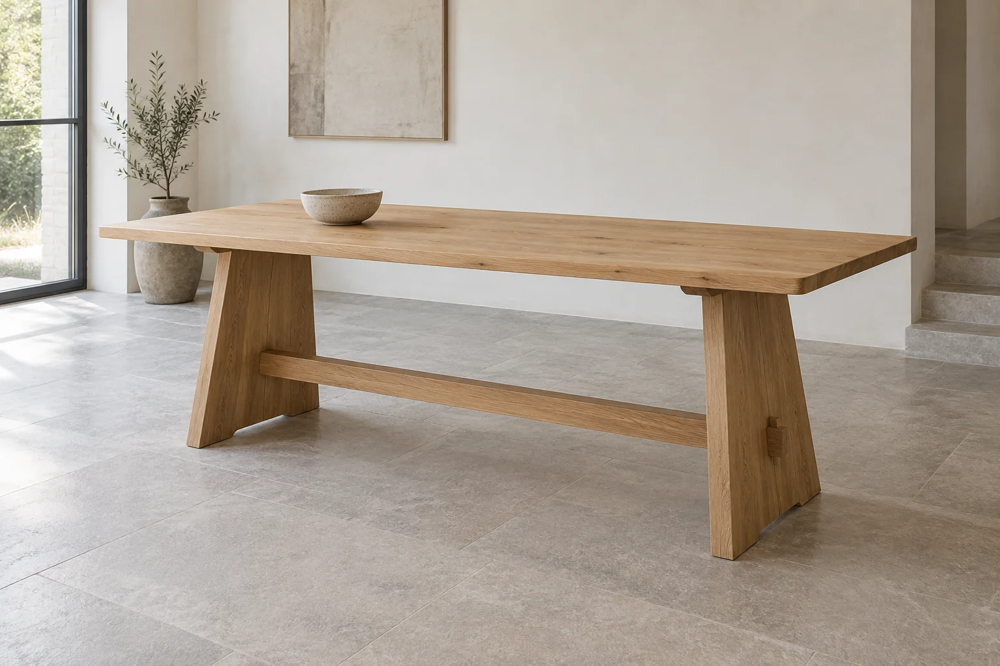

A place to gather
Trest table
A broad oak surface, a pair of grounded supports and room for the day to unfold. Trest makes a calm centre for eating, working and being together.
1600 × 850 × 740 mm
2000 × 900 × 740 mm
Natural oak / Warm brown oak
Explore Trest table2000 × 900 × 740 mm
Natural oak / Warm brown oak